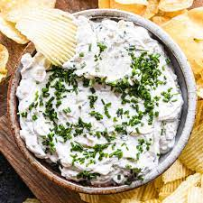

Sour Cream & Onion Dip

The best sour cream & onion dip
This recipe is a better alternative to store bought sour cream & onion dip
Ingredients
1 tub Dean's french onion dip
1 tub of sour cream
Steps
put 1 scoop of sour cream in a seperate bowl
put 1 same volume scoop of Dean's french onion dip in same bowl
continue 1:1 ration scooping until desired amount of dip
stir until thoroughly mixed